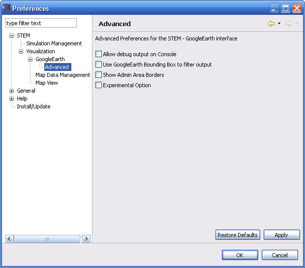

Google Earth Advanced
- "Allow debug output on Console"
This is used for problem determination.
. (Default: False)
- "Use GoogleEarth Bounding Box to filter output"
This will improve performance because only data is sent to GoogleEarth
for the areas shown in the GoogleEarth window.
This is useful when you are usually zoomed in on GoogleEarth to examine a
small area. This is only available when using one the servlet related
display methods.
(Default: False)
- "Show Admin Area Borders"
If selected then the borders of the STEM Administration areas are shown.
This is usually not needed because GoogleEarth also has an option to
show border areas.
(Default: False)
- "Experimental Option"
Used to turn on various expirmental options. Not normally used!
(Default: False)
